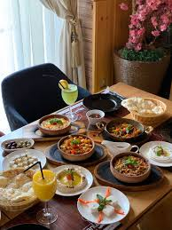
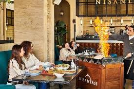

Nişantaşı, named after an exclusive quarter on Istanbul’s European side, is Cairo's most exciting and stylish destination for Turkish cuisine.
We offer atmospheric dining in a relaxing setting that attracts people from far and wide.
The experience is unlike any other, from dishes to share with family and friends to the ceremonious flourish of a sealed terracotta cooking pot cut open at your table.
Our cuisine offers so much to discover and delight in.
Nişantaşı is brought to you by International Food Academy .

Our Turkish chefs create dishes using the finest ingredients based on culinary techniques passed down through the generations.
The result is truly authentic Turkish gastronomy.
Experience the finest Turkish cuisine in Cairo, from our famous home-baked bread to our enticing traditional dishes to our legendary Nişantaşı house specialities.